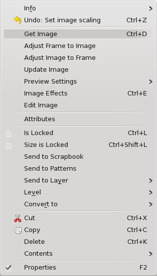

Right-click on the empty frame to show its Context Menu as seen to the right. An empty frame will not show all these choices.
- Info gives a short list of information about the image, its
name, the PPI (pixels per inch) of the original and as shown in
Scribus, its colorspace, and whether it is set to print (and export to
PDF).
- Undo will undo the last operation, which should be indicated. If applicable, there will also be a Redo item.
- Get Image allows for importing an image, as indicated above.
- Adjust Frame to Image enlarges or shrinks the width and height of your frame to fit the image at its current resolution.
- Adjust Image to Frame adjusts the image to the frame. Image will remain proportional if this is checked in Image tab of Properties.
- Update Image reloads the image. Would be used if you have edited the source file. See Edit Image below.
- Preview Settings This allows to image to be visible or not,
and if visible, the resolution can be selected. Lower resolution or not
showing images will speed up screen refreshes if this is sluggish. Full Resolution can only be as high as your monitor supports. These settings do not affect printing your image or exporting to PDF.
- Image Effects (also Ctrl + E) provide for a number of
editing types, like blurring or changing contrast and brightness. These
edits happen in a nondestructive way, i.e., the source file is not
altered.
- Edit Image starts your image editor as set in the File->Preferences->External Tools and loads the image.
- Attributes will not be discussed here.
- Is Locked locks the frame’s position, size, and content.
- Size is Locked locks only the size. Frame and image can otherwise be moved and edited.
- Send to Scrapbook and Send to Patterns will not be covered here, except to say that these allow for saving content to be shared among documents.
- Level allows you to move the frame up or down levels on the
current layer. If your document has more than one layer, there will
also be an item Send to Layer to allow moving the frame to a different layer.
- Convert to gives you the following sub-choices:
- Polygon, converts to a polygon, with apparent loss of your image, recoverable with Convert to Image Frame.
- Text Frame converts to that kind of frame, in which case
your image becomes invisible, but will be restored if you convert back
to an image frame. You cannot show text and an image together, except
where text is incorporated in an image. Use a superimposed text frame
to apply text over an image.
- Cut, Copy, and Delete are covered in Working with Frames.
- Contents > Clear is only present when your frame has content, and you will get a dialog to Ok the operation. There is also a choice Contents > Copy to copy only the content of the frame, as opposed to copying the frame and its contents.
- Properties brings up or hides the Properties Palette
|
 |